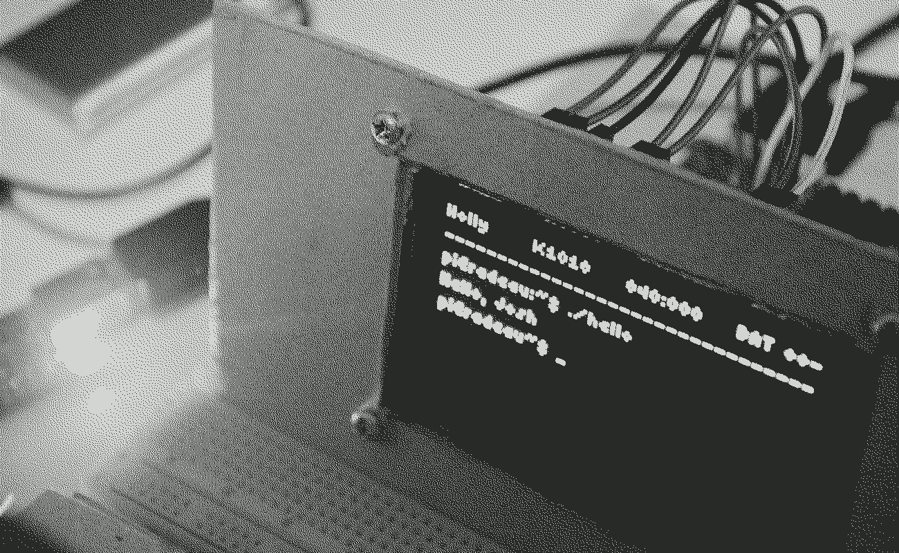
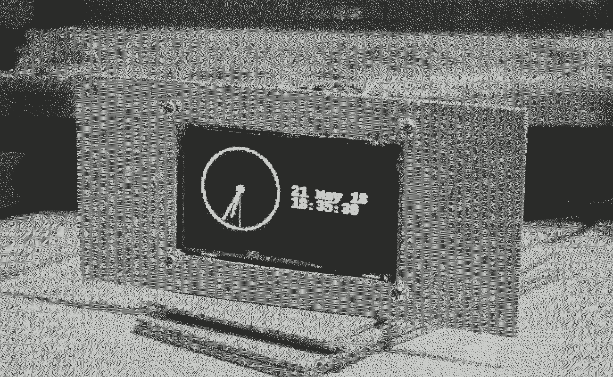

Holly was a RPi Zero W that had a 2.7″ monochrome OLED display and was powered by a 2700mAh lithium ion battery.
The project is put on hold as I messed up the soldering of the battery circuit. In the meantime, the Pi is being used in another project.
1C1 6Y1 44.6 P26.9 D10.3 V4.0 R3.5